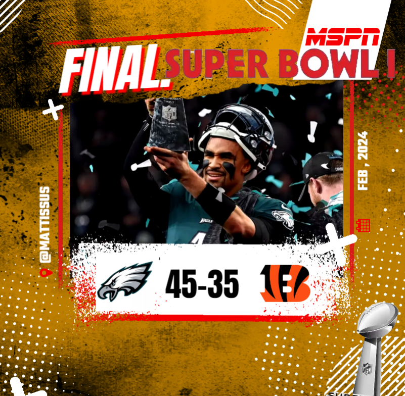
AML CHAMPION
Season 1 Champion - Kenny (M24)
Eagles (Kenny) def. Bengals (Mikey), 45–35
Kenny opened AML championship history with a 45–35 win over Mikey and the Bengals, giving the Eagles the first title in league history.
Every championship winner in Apollo Madden League history, complete with title graphics, final scores and a short recap for each season.

Eagles (Kenny) def. Bengals (Mikey), 45–35
Kenny opened AML championship history with a 45–35 win over Mikey and the Bengals, giving the Eagles the first title in league history.
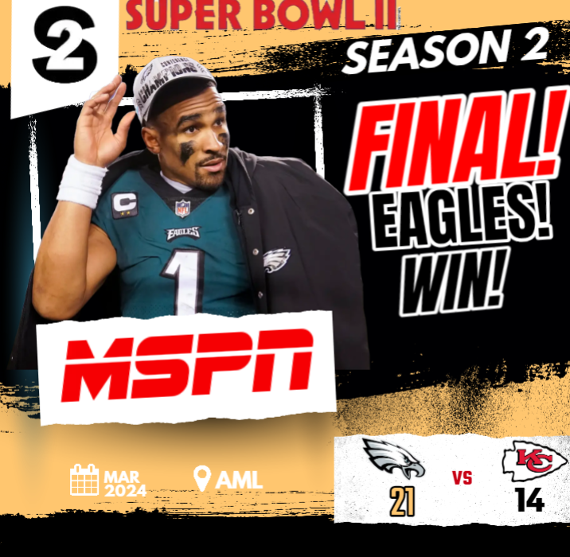
Eagles (Kenny) def. Chiefs (Chazz), 21–14
Kenny and the Eagles made it back-to-back, defending the crown with a 21–14 win over Chazz and the Chiefs in Season 2.
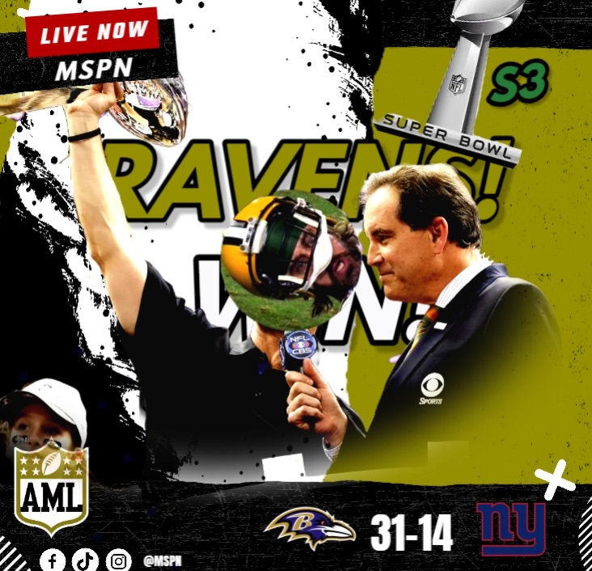
Ravens (Slopper) def. Giants (Chazz), 31–14
Slopper claimed the Season 3 championship in convincing fashion, leading the Ravens past the Giants 31–14 for his first AML title.
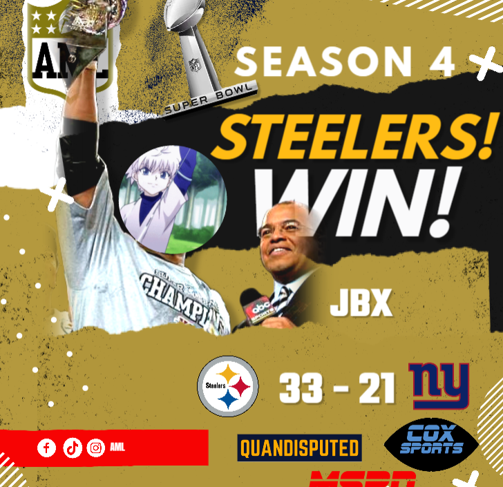
Steelers (JBX) def. Giants (Chazz), 33–21
JBX delivered a strong Super Bowl performance in Season 4, guiding the Steelers to a 33–21 win over the Giants and earning his first championship.
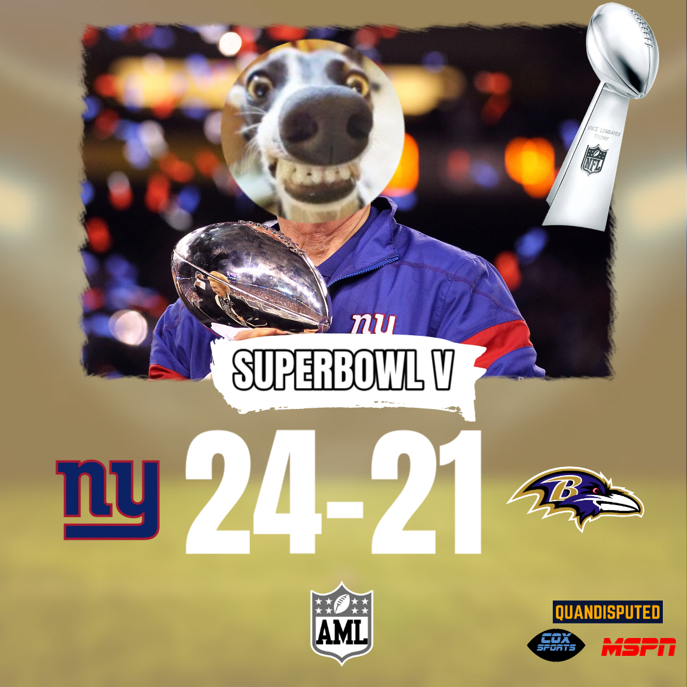
Giants (Chazz) def. Ravens (Slopper), 24–21
After falling short in the previous two title games, Chazz finally broke through in Season 5, edging Slopper’s Ravens 24–21 to win it all.
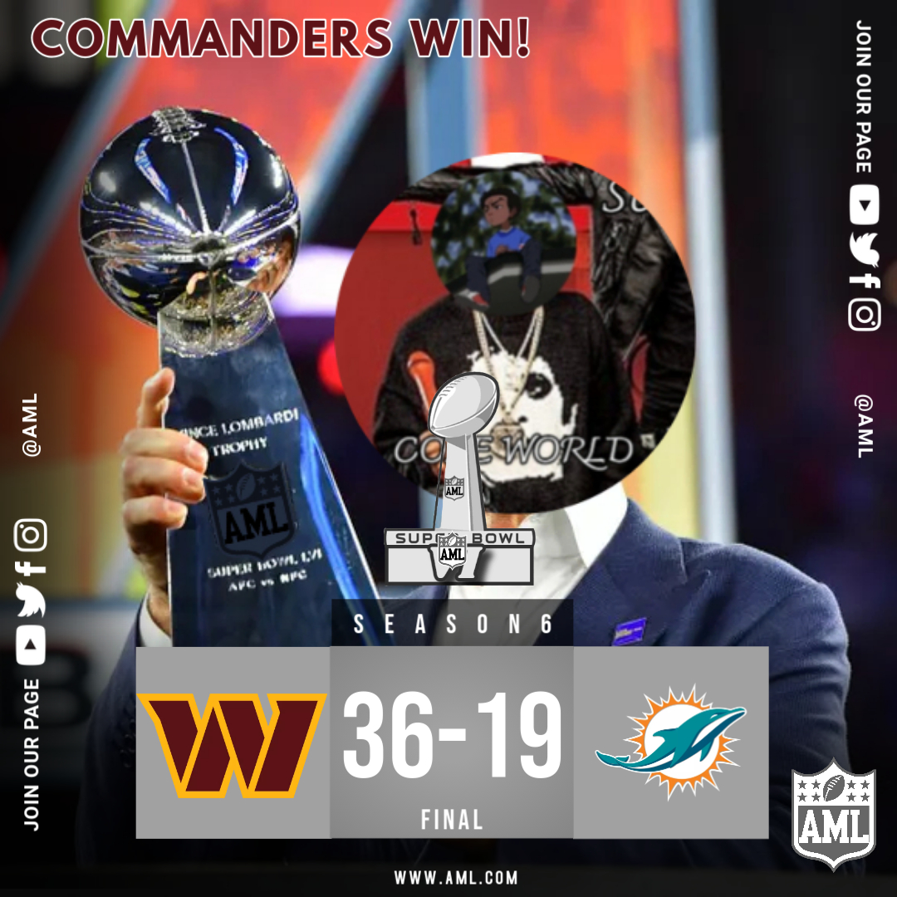
Commanders (Cole) def. Dolphins (Mikey), 36–19
ColeWorld captured his first AML championship in Season 6, steering the Commanders to a 36–19 win over Mikey and the Dolphins.
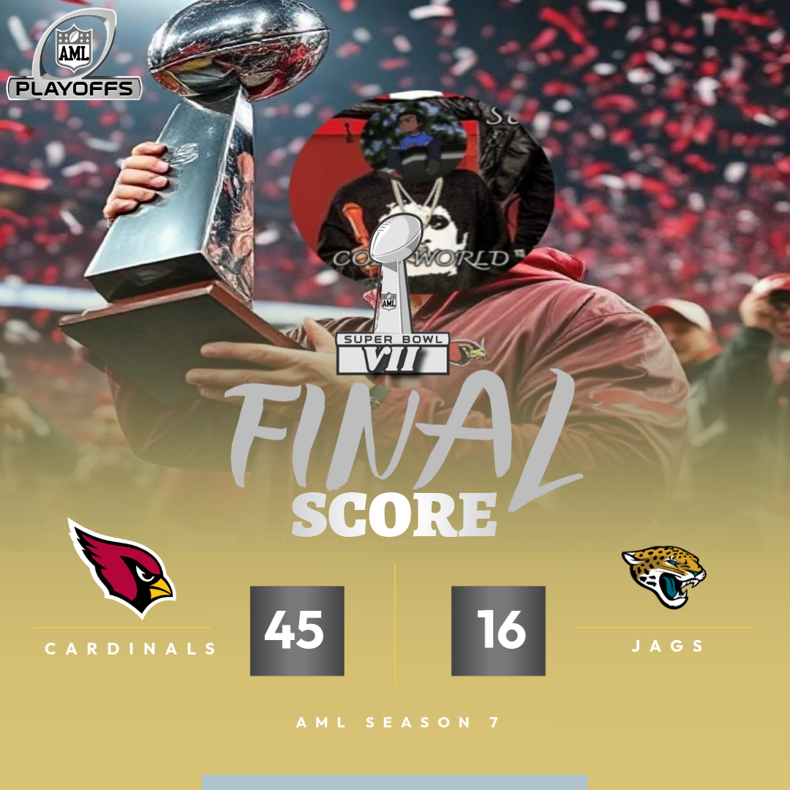
Cardinals (Cole) def. Jaguars (Slopper), 45–16
ColeWorld stayed on top in Season 7, winning back-to-back titles with a dominant 45–16 victory over Slopper and the Jaguars.
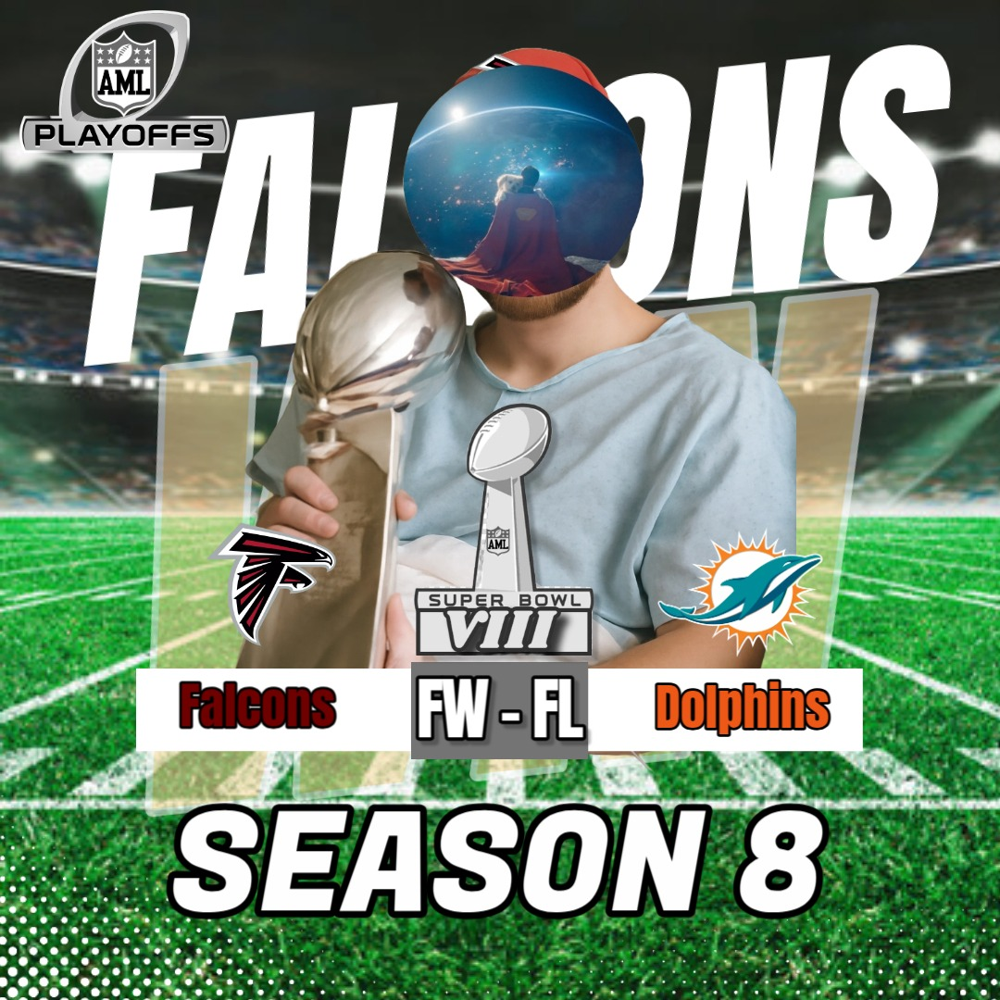
Falcons (JoeMa) def. Dolphins (Slopper), by force win
JoeMa and the Falcons were awarded the Season 8 championship by force win. The league continues to honor JoeMa and his memory. LLJM.
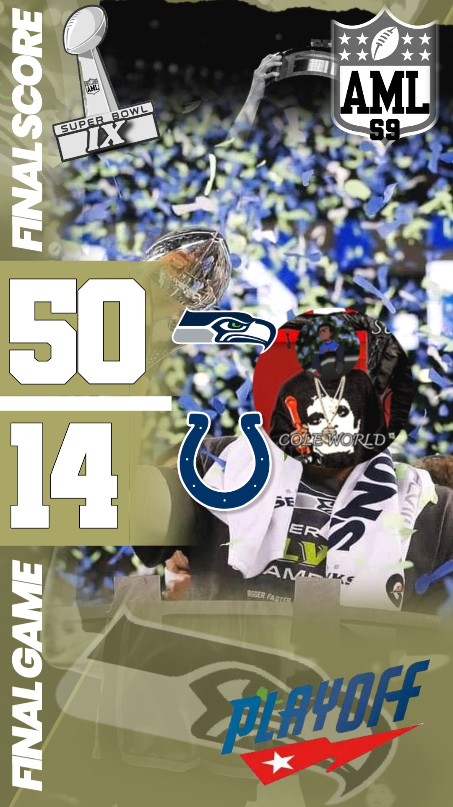
Seahawks (Cole) def. Colts (Sherm), 50–14
ColeWorld returned to the top in Season 9 with one of the most dominant title-game performances in AML history, routing the Colts 50–14.
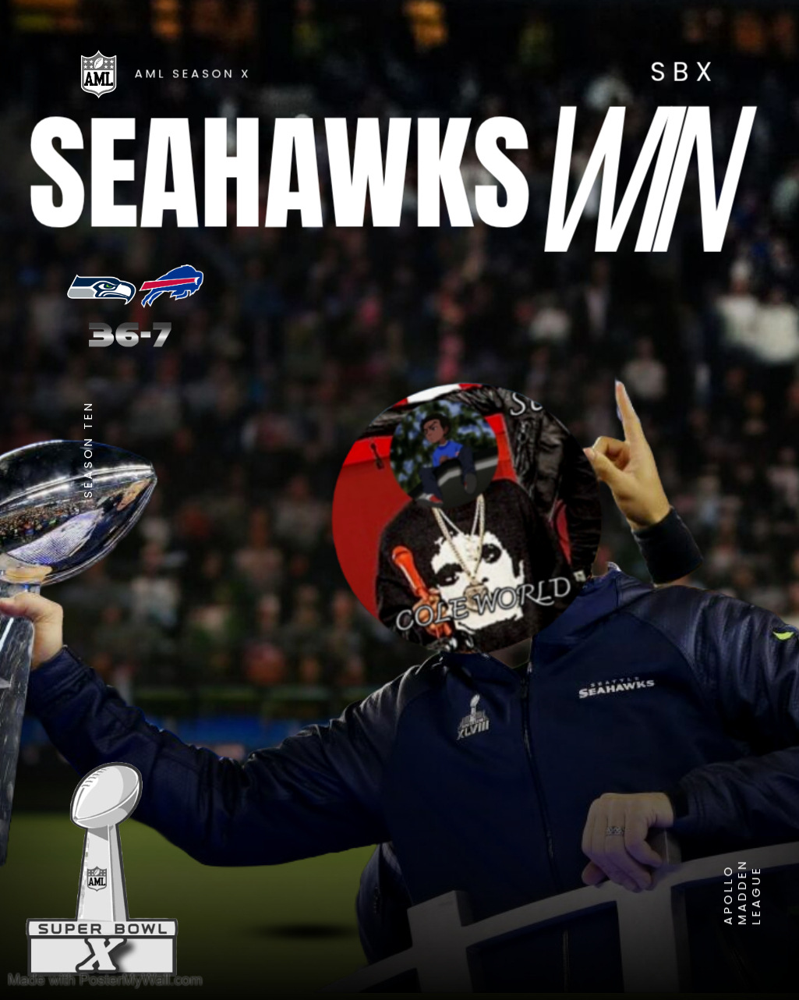
Seahawks (Cole) def. Bills (Kenny), 36–7
The Seahawks repeated in Season 10, as ColeWorld overwhelmed Kenny and the Bills 36–7 to earn another back-to-back championship run.
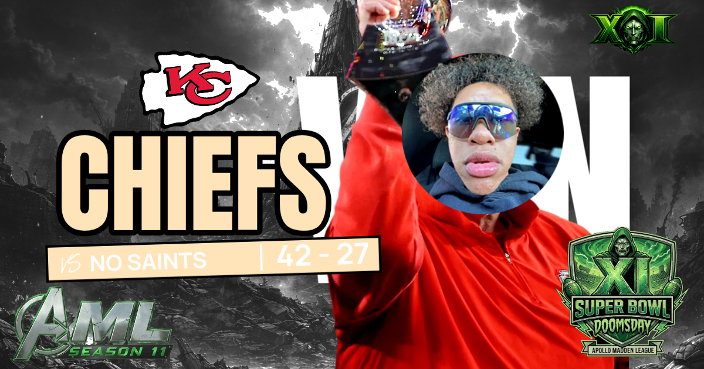
Chiefs (Kenny) def. Saints (JBX), 42–27
Kenny added a third AML title to his résumé in Season 11, powering the Chiefs past JBX and the Saints by a 42–27 final.
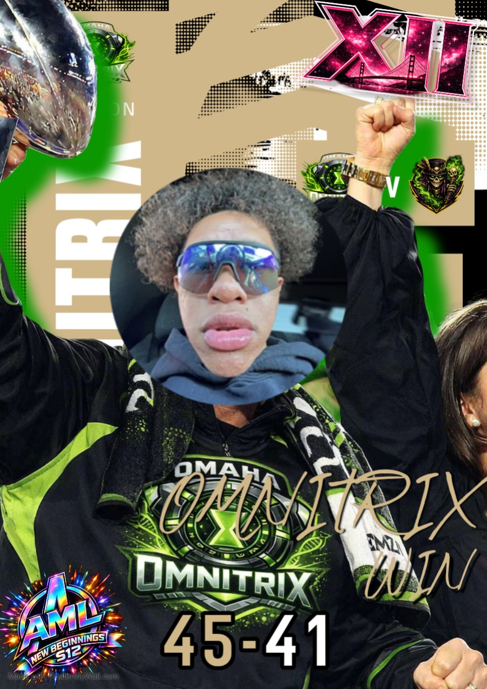
Omnitrix (Kenny) def. Voodoo (Sebb), 45–41
Season 12 marked the first season of AML original teams, and Kenny’s Omnitrix became the first original team to win a championship with a 45–41 victory over Sebb’s Voodoo.
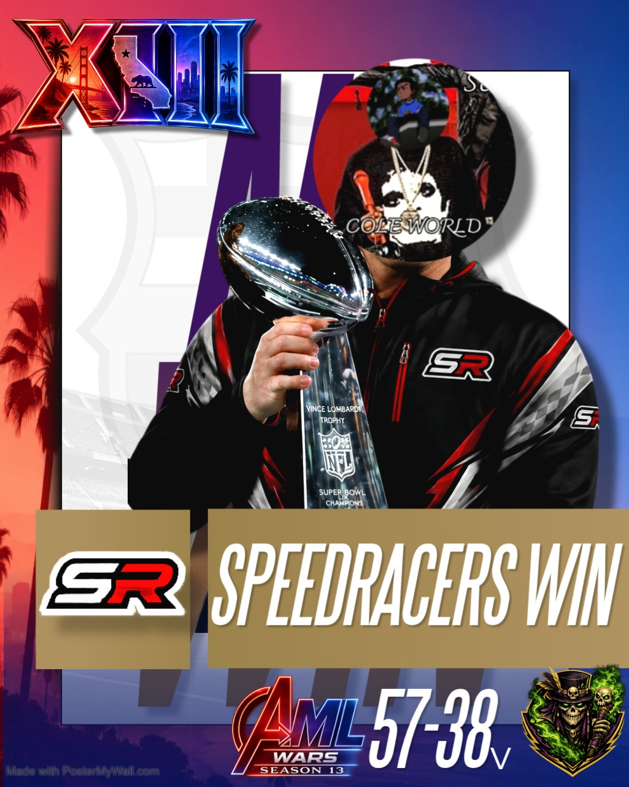
SpeedRacers (Cole) def. Voodoo (Sebb), 57–38
ColeWorld closed out Season 13 in explosive fashion, leading the SpeedRacers to a 57–38 win over Voodoo and adding yet another title to his AML legacy.